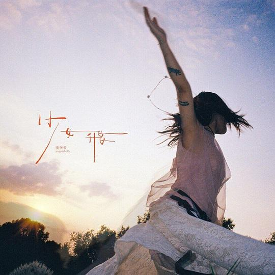
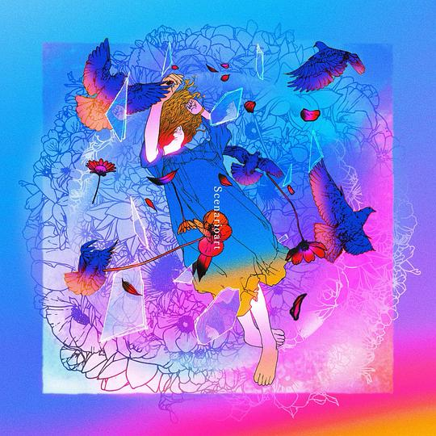
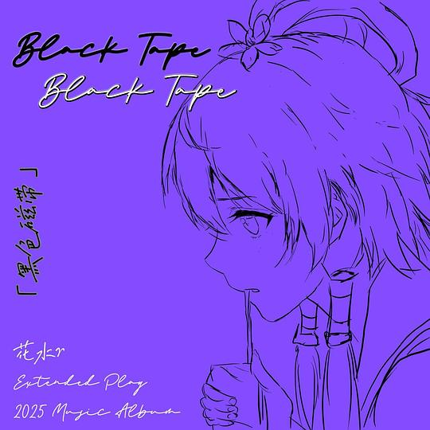
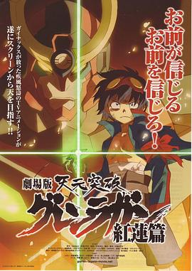
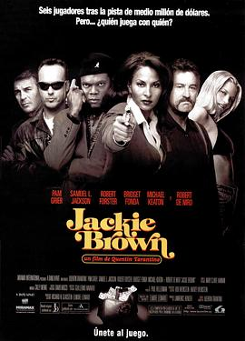

2025年11月
广播发布后不可编辑，所以每条都是那一刻的原话。
2025-11-30 23:42:18
 读过 我想吃掉你的胰臟 ★★★★☆
读过 我想吃掉你的胰臟 ★★★★☆
文笔淡淡的，故事惨惨的，虽然不算太好，但也在我记忆里不可磨灭。
2025-11-30 22:50:00
 看过 死钻倒影 / Reflet dans un Diamant Mort ★★★★☆
看过 死钻倒影 / Reflet dans un Diamant Mort ★★★★☆
灿烂得一塌糊涂的炫技之作，但观感尚佳体验很好。其实从那把发不出子弹的枪开始故事就露了馅，梦境表现得淋漓尽致。交叉蒙太奇运用得恰到好处，有很多转场教人耳目一新。漫画与闭眼后右边景致的消失的创意很棒。
2025-11-29 17:11:41

《麦子》那一首立意蛮不错的，强行接地气也算一种接地气。也蛮喜欢《23》的。
2025-11-29 16:58:19
看过 疯狂动物城2 / Zootopia 2 ★★★★☆
开头的飙车戏简简单单告诉观众迪士尼的把控实力，于是我们仅需放松去享受故事就好。画面上致敬了《料理鼠王》《帕丁顿熊2》《闪灵》等影片，翻译的“我能打一天”教人忍俊不禁。关继威的声音尖尖的，还蛮有辨识度的。虽然明白剧情的走向，没办法但就是吃这一套大方又暧昧的感觉捏。和阿林看的第一部电影。(o^^o)
2025-11-28 15:56:36
听过 参考答案：略 ★★★★☆
没想到有了条目。桥的节奏很上头。
2025-11-28 14:08:01

曲风还不错，喜欢男声女声合唱。
2025-11-28 14:07:49
 在听 橘黄橙调 ★★★★☆
在听 橘黄橙调 ★★★★☆
似乎很喜欢重章叠句，但曲调与之前无差，没有特色了。
2025-11-28 14:06:43
 在听 遥远小镇的我 ★★★★☆
在听 遥远小镇的我 ★★★★☆
弦乐的旋律很动听。
2025-11-27 18:59:54
在听 少女，飞 ★★★★☆
《麦子》那一首立意蛮不错的，强行接地气也算一种接地气。
2025-11-26 20:47:16
看过 佩德罗·巴拉莫 / Pedro Páramo ★★★☆☆
作为摄影师出身的导演，只会用漂亮好看的画面而非场面来讲故事，尤其是这样史诗般的故事，很可惜。但作为处女作来说，完成度很高，同时对魔幻现实的刻画很合适，服化道也很棒。只是在生父上了那小女孩的床的时候我才隐隐约约觉着到点什么。好晦涩。
2025-11-25 22:42:37
 看过 淘金记 / The Gold Rush ★★★★★
看过 淘金记 / The Gold Rush ★★★★★
吃皮鞋与面包舞也太经典了。百年前场面调度便信手拈来，卓别林也太厉害了。特效逼真得教我想不明白如何制作的。
2025-11-25 10:30:20
 听过 我用什么把你留住 ★★★★☆
听过 我用什么把你留住 ★★★★☆
没想到除了同名主打歌，还有一首《马》比较好听。制作似乎很喜欢哼唱的调性。
2025-11-24 11:43:10
 读过 开始写歌 ★★★★☆
读过 开始写歌 ★★★★☆
科普的形式大于作用？
2025-11-24 10:01:13
 听过 TVアニメ「鬼滅の刃」竈門炭治郎 立志編 オリジナルサウンドトラック(通常盤) ★★★★☆
听过 TVアニメ「鬼滅の刃」竈門炭治郎 立志編 オリジナルサウンドトラック(通常盤) ★★★★☆
编曲融了好多日式传统乐器。尤其喜欢《灶门炭治郎之歌》。
2025-11-24 09:59:16

喜欢《南京夜无电波讯号》，大概我是在宁的原因吧。
2025-11-23 16:09:09
看过 华尔街之狼 / The Wolf of Wall Street ★★★★☆
老马的电影怎么总是会出现剪辑失误呢，这样一个甲亢的角色让会用力过猛的小李子来演还蛮适合的。资本使人异化啊。
2025-11-22 13:22:28
 看过 狂野时代 ★★★★☆
看过 狂野时代 ★★★★☆
这一次真是“电影是造梦不是今日说法”的具现化了，毕赣的镜头下无时无刻不是对过去的再现：荡麦的火柴盒、凯珍的餐厅与潮湿的KTV。画幅的变化容易让人想起科长的《山河故人》与韦斯的《布达佩斯大饭店》，而与韦斯的再相似就是装置艺术的狂野造型。但同时毕赣作为一个导演已经失掉了调教演员的能力，除了黄觉与姑父的老练，其余都只适合表演而不能出声。这一次没有伍佰的歌声了，真可惜，但是出现了巴赫的《甜蜜死亡》。我尤其喜欢最后一个梦境，匡威和万斯在雨水里的反叛。电影让我三次惊讶，分别在惊人的接吻、邰肇玫的黑胶专辑、鬼小姐长出的獠牙。长镜头还是蛮有野心的，尤其在延时摄影的运用上，但怎么说呢，没了《凯里蓝调》的灵气了。
2025-11-21 09:45:41
看过 天元突破红莲螺岩 特典 / 天元突破グレンラガン 特典 ★★★★☆
阳子小姐可爱捏。
2025-11-21 09:45:28

Simon和Nia的爱情真简单。突破突破突破，我的钻头可是要突破天际的。
2025-11-21 09:40:47
 看过 天元突破剧场版 螺岩篇 / 劇場版 天元突破グレンラガン 螺巌篇 ★★★★★
看过 天元突破剧场版 螺岩篇 / 劇場版 天元突破グレンラガン 螺巌篇 ★★★★★
热血太热血了。最后机器人头的组合起来惊掉我的下巴。
2025-11-21 09:38:10
 看过 天元突破红莲螺岩 / 天元突破グレンラガン ★★★★★
看过 天元突破红莲螺岩 / 天元突破グレンラガン ★★★★★
当年看到aniki战死的时候其实很意外，从那之后一直执迷于大哥的精神。也一直记得“相信着我吧，相信着相信你的我。”最后冲上太空好燃哦，这就是trigger一开始的灵魂么。
2025-11-19 18:22:51
看过 鬼灭之刃：无限城篇 第一章 猗窝座再袭 / 劇場版「鬼滅の刃」無限城編 第一章 猗窩座再来 ★★★★☆
顶级的视效与演出，可以看出剧本在努力平衡多线叙事所容易带来的平衡性问题，但还是在节奏上出现了瑕疵，过去诟病的回忆时间太长的毛病依旧存在。可惜我蝴蝶忍大人的牺牲。飞碟社的三渲二技术好强悍哦。
2025-11-18 14:57:16
看过 鬼灭之刃：柱训练篇 / 鬼滅の刃 柱稽古編 ★★★☆☆
ep2好精彩的callback。支持炭炭走下去的到底是仇恨还是为了救妹妹的信念？。
2025-11-18 00:28:45
在看 鬼灭之刃：柱训练篇 / 鬼滅の刃 柱稽古編 ★★★☆☆
ep2好精彩的callback。
2025-11-17 23:53:13
看过 鬼灭之刃：锻刀村篇 / 鬼滅の刃 刀鍛冶の里編 ★★★☆☆
故事开始焦灼了起来，但有一些伏笔收不回来很可惜。已经厌烦了突然穿插的回忆了。最后一集里这才是真正的众人的簇拥吧。
2025-11-17 22:18:51
在看 鬼灭之刃：锻刀村篇 / 鬼滅の刃 刀鍛冶の里編 ★★★☆☆
故事开始焦灼了起来，但有一些伏笔收不回来很可惜。
2025-11-17 19:55:10
看过 鬼灭之刃：游郭篇 / 鬼滅の刃 遊郭編 ★★★☆☆
剧版不知怎的总是差些感觉。但ep10以爆炸景作结真有一丝震撼。
2025-11-17 11:11:52
在看 鬼灭之刃：游郭篇 / 鬼滅の刃 遊郭編 ★★★☆☆
剧版不知怎的总是差些感觉。
2025-11-16 23:05:15
看过 鬼灭之刃 剧场版 无限列车篇 / 劇場版 鬼滅の刃 無限列車編 ★★★★☆
炭炭能这样直面现实属实不易，真是好强的意志。对炎柱这样大哥壮烈牺牲般的故事简直欲罢不能。摄影简直太炫酷了。
2025-11-16 16:43:19
 看过 鬼灭之刃 / 鬼滅の刃 ★★★☆☆
看过 鬼灭之刃 / 鬼滅の刃 ★★★☆☆
画风很别致，故事不感冒。单纯为了将上映的剧场版而做做功课。炭炭也太温柔了。飞碟社的演出的确加大分，否则单说剧情依旧老套。
2025-11-15 23:17:53
看过 藤本树 17-26 / 藤本タツキ 17-26 ★★★★★
古灵精怪的故事与优秀的演出结合期待简直绝杀。青年时候的阿树真是宝物呀。最喜欢第三篇《恋爱是盲目的》，演出颇有《物语系列》的风格。其实《蓦然回首》很有《妹の姐》的味道。
2025-11-15 19:25:22
在听 ザ・レンチキュラーズ ★★★★☆
曲风还不错，喜欢男声女声合唱。
2025-11-15 12:09:48
看过 惊天魔盗团3 / Now You See Me: Now You Don’t ★★★☆☆
眼瘾的确过足了，但剧情太牵强。喜欢中间炫技的一镜到底。
2025-11-12 20:26:02
看过 异常 / グロテスク ★★★☆☆
医生也太像北野武了吧，笑死，使我看的时候一点恐惧感都没有。道具蛮逼真的。有反转我是真没想到。以前喜欢cult片的自己没事找着看的，一天偶然追忆起，终于找到又重看了一遍。
2025-11-12 20:18:00
看过 日掛中天 ★★★★☆
李李姐医院的独白与最后的嘶吼太显功力了，反倒使得老吴更像是演的了。同时流产的无实物表演让我想起了《正发生》，但这里仅靠李李姐的表演就达到了更揪心的效果，我头一回见到这样的震惊的哭泣。老吴坐在桥上说“不知道为什么搞成今天这个样子”，我瘫在椅子上想起了和阿云最后电话里说的一样的话“再见一面吧再见一面”，我也不明白生活这么就这样令我压抑得喘不下气了呢。
2025-11-12 17:12:37
 读过 苏超来了 ★★★☆☆
读过 苏超来了 ★★★☆☆
对苏超本身的解释并不深刻，但有很多张配图充满了人文主义的气息。
2025-11-12 17:12:34
在读 苏超来了 ★★★☆☆
对苏超本身的解释并不深刻，但有很多张配图充满了人文主义的气息。
2025-11-12 08:39:49
说

2025-11-11 21:21:26
 听过 不可思議のカルテ ★★★★☆
听过 不可思議のカルテ ★★★★☆
第一句很抓耳，整体旋律好悠扬。
2025-11-11 21:21:15
 听过 1991 ★★★★☆
听过 1991 ★★★★☆
故障声抓耳。
2025-11-11 15:05:48
 看过 出租车司机 / Taxi Driver ★★★★☆
看过 出租车司机 / Taxi Driver ★★★★☆
好伟大的开场，出租车在雾气中驶出，随之车水马龙流光。司机算得上是个流氓无产者，志趣不高甚至低级，但他也有最基本最简单的道德评价标准，孩子是值得保护的。发型好像剪辑失误了，最后的枪战不仅节奏有些问题，伤痕还穿帮了。这时候的马丁真青涩。
2025-11-11 09:41:26
在读 开始写歌 ★★★★☆
科普的形式大于作用？
2025-11-10 23:56:53
 看过 天伦之旅 / Everybody’s Fine ★★★★☆
看过 天伦之旅 / Everybody’s Fine ★★★★☆
摄影很舒服，罗伯特演得很好呀。作为孩子长大之后也会家家有本难念的经。大人孩子切换时的蒙太奇效果很棒。实际上我看错了电影，我想找的是90年的那部orz。
2025-11-10 17:46:42
 读过 没有人给他写信的上校 ★★★★☆
读过 没有人给他写信的上校 ★★★★☆
居然和《百年孤独》是同一世界线么。故事讲述得还是老练，就是厚度太少了。鸡鸣给人以希望。
2025-11-10 17:17:22
在读 没有人给他写信的上校 ★★★★☆
居然和《百年孤独》是同一世界线么。故事讲述得还是老练，就是厚度太少了。
2025-11-10 09:03:55
 读过 你的名字 ★★★★☆
读过 你的名字 ★★★★☆
双线叙事很不错，其实没必要特意加一个性别符号的。
2025-11-10 09:03:24
 读过 天气之子 ★★★☆☆
读过 天气之子 ★★★☆☆
故事里勇敢对抗世界的少年是我的一切神往，但没有画面果然还是撑不起来。封面有诚哥的印签。
2025-11-09 16:13:53
 读过 败北女主太多了！2 ★★★★☆
读过 败北女主太多了！2 ★★★★☆
yanami桑一开始是真不知道温水的好啊。此卷是八卷中为数不多的重点着墨于小柠檬的故事，还蛮喜欢她那种假小子般大大咧咧缺根筋的性格的。烧盐的童话太伤人，还是这种偷偷暧昧的关系最吸引人。因为我的失误导致了这本宝贝被沾染上了蟹汁。好伤心。
2025-11-06 21:44:30
 听过 唤晚风 ★★★★☆
听过 唤晚风 ★★★★☆
对“玻璃玫瑰由爱意打制”这句歌词印象很深很中意。
2025-11-06 16:22:24
 想看 搬家 / お引越し
想看 搬家 / お引越し
2025-11-06 00:03:25

除了中间那段西蒙太太拿出第三只相同袋子伴上马克斯微小的嘴角的镜头让人大呼之外，这是我见了故事摄影剪辑最差的昆汀的电影了。失望捏。
2025-11-05 17:17:26
 在看 THE LENTICULARS a/ / ザ・レンチキュラーズ a/ ★★★★☆
在看 THE LENTICULARS a/ / ザ・レンチキュラーズ a/ ★★★★☆
雨宫还是太懂JK和DK了。
2025-11-04 23:46:54
在看 鬼灭之刃 / 鬼滅の刃 ★★★☆☆
画风很别致，故事不感冒。
2025-11-04 08:57:29
在读 败北女主太多了！2 ★★★★☆
yanami桑一开始是真不知道温水的好啊。
2025-11-04 00:31:01
 看过 反复无常的夏天 / Rozmarné léto ★★★★☆
看过 反复无常的夏天 / Rozmarné léto ★★★★☆
稍后再看的遗珠。画面太青绿，摄影很明白什么究竟是夏日的明媚与雨时的惬意了。每个人都汗涔涔的。故事好市井，三个大男人各异又典型的身份是电影充满讽刺。无常的魔术师离开了，小镇又开始反复了。
2025-11-03 15:34:54
 读过 法兰西内战 ★★★★★
读过 法兰西内战 ★★★★★
恩格斯好喜欢夸他的老马啊。
2025-11-02 15:15:30
看过 凶降喜讯 / 굿뉴스 ★★★★☆
转场很精妙，配乐居然意外地适合。这小人物拧不过时代的大腿啊，连路人甲都有身份证了他却只得到了一个手表。赤色主义者也太像恐怖分子了吧，怎么这样脸谱化，尤其那个女副手太聒噪了。
2025-11-01 17:52:40
看过 摇摆少女 / スウィングガールズ ★★★★☆
我的天其实中间好几段看得厌蠢症犯得很严重，香织也太不受重视了。真羡慕老师有个专门听音乐放音乐的房间哦。上野演技还是有点生硬的，居然能见到这么嫩的高桥。追野猪那一段的定格横移也太天才了，寻找生活里的节拍并共舞的杂耍蒙太奇也很棒。贝斯手有点像老雨。
2025-11-01 15:25:11
看过 福音战士剧场版特典 3.0(-46h) / EVANGELION:3.0(-46h) ★★★☆☆
其实漫画里asuka的独白更动人。这里的特典只不过试图解释《终》里粉毛的动机。差强人意吧。